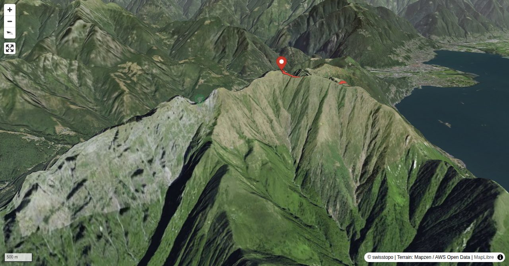

The highest point between Centovalli and Lago Maggiore is called “Gridone o M. Limidario” on the Swiss map. However, if you ascend through Val di Bordei to the summit, you will find Ghiridone painted on prominent boulders. So, what is the correct name? Both. Very often in the Ticino canton more than one name is in use, one in the local dialect and another in the standard Italian language. While Ghiridone is the standard name used by many in the region around Locarno and Centovalli, the people from Brissago prefer calling the mountain Gridone in their dialect, formerly also Cridone or Gredone. Monte Limidario is used on the Italian side of the border and is derived from the Latin word “limes” (border). But it may not have denoted today’s border between Switzerland and Italy, but the boundary line between pastures and rock.
Quick Facts
| Summit elevation | 2178 m |
|---|---|
| Difficulty | SAC T3 Demanding mountain hiking with possible exposure and a real need for sure-footedness. Guide |
| Trailhead | Rasa, Bergstation |
| Distance | 9.9 km (out-and-back) |
| Total ascent | ~1528 m |
| Elevation range | 661-2177 m |
| Route sources | SAC Route Portal |
Photos


Route Map & Elevation
i
i
sac_scale (precise T1–T6) with
swissTLM3D Wanderwegart
fallback where OSM is silent (coarser T2/T3 and T4+ buckets).
Coverage: OSM 51.4% · swisstopo 48.4% · unknown 0.0%.Elevations computed from the inlined GPX track (SwissTopo height API).
Loading forecast…
3D Terrain View

Route Details
Rasa - Gridone - Rifugio al Legn
- Rasa – Bordei 45 min. Bordei – Bocchetta di Valle 3 h 30 min. Bocchetta di Valle – Gridone 45 min. Gridone – Rifugio Al Legn 45 min.
Terrain & safety
There are hardly any technical difficulties on this route. In the spring snowfields in Val di Bordei between P. 1433 and 1800 m may make the ascent more difficult. Later in the year overgrowing bushes cover more and more of the path and markings. After heavy or long rainfall, the crossings of the creeks in the upper Val di Bordei may become problematic.
Source: SAC Route Portal
Getting There & Back
Start: Rasa, Bergstation (895 m)
Directions from to Rasa, Bergstation
End: Rifugio Al Legn (1785 m)
Directions from Rifugio Al Legn back to
Cable car to Rasa, Bergstation.
Field Reference
| Trailhead | Rasa, Bergstation | 46.15620, 8.65480 |
|---|---|---|
| Summit | Gridone (2178 m) | 46.12337, 8.64795 |
Coordinates are WGS84 decimal degrees (lat, lon). Emergency: 112 (general) or 1414 (Rega air rescue). Page URL: